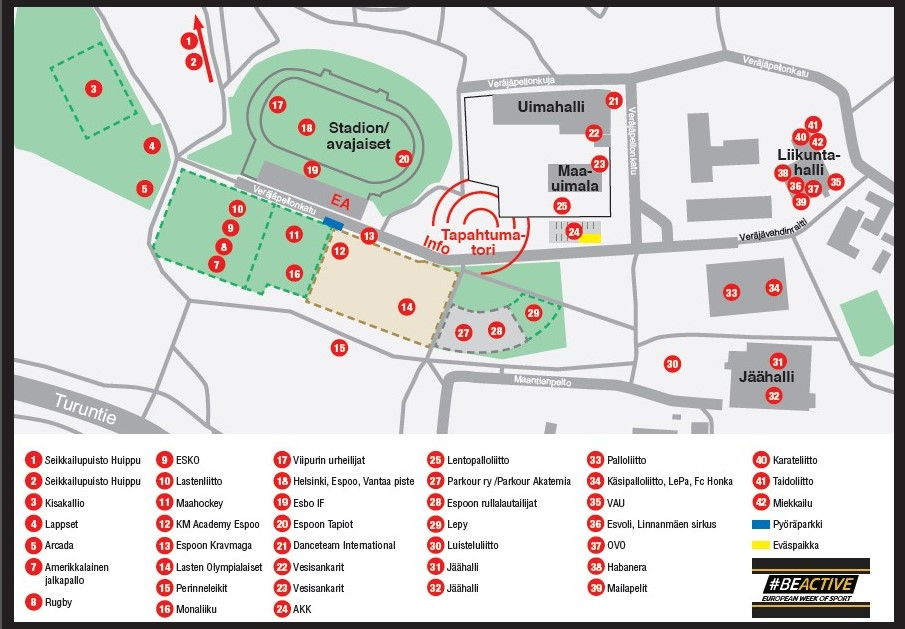

Tapahtumatori on auki ja tapahtumatorin lavalla on ohjelmaa klo 09-11.15 sekä klo 12.15-15. Tapahtumatori sijaitsee Angry Birds- puiston viereisellä aukiolla Leppävaaran urheilupuistossa.
Maskottiparkki, tapahtumatori. Parkissa pyörivät seuraavat liikunnalliset hahmot: Susijengin Susi, Jääkiekkoliiton Finkey ja Pinkey, Street Hockey Roketti, Perinneleikki ry:n Sirkku Sirkka, Palloliiton Huuhkaja ja Helmari, EKS Ringette Safiiri ja Angry birds, Redi-lintu. Maskotit ovat paikalla klo 10-10.50 ja klo 12.30-13.20
Tubettajat MaskottiparkissaTapahtumatorilla pidetään myös tubettajien Meet & Greet tilaisuuksia iltapäivällä. Paikalla Jaakko Parkkali, Pernilla Böckerman ja Pinkku Pinsku. Klo 12.15 -13.20 Pernilla ja Jaakko. Klo 13.30-14.30 Pinkku Pinsku
MM-pokaali Jääkiekkoliiton ja Kiekko-Espoon pisteelle tapahtumatorille saapuu suureksi kunniaksemme myös miesten jääkiekon Maailmanmestaruus pokaali. Pokaali on esillä klo 10-11 ja klo 12.45-15.00
Avajaiset klo 11.30-12 Leppävaaran Stadionilla
Useat tapahtuman pisteet ovat kaikille avoimia klo 14.15-15, ilman ilmoittautumista. Pisteitä on ympäri Leppävaaran urheilupuistoa. Lisäksi pisteet 24 ja 38 ovat auki klo 16 asti. Muut pisteet sulkeutuvat klo 15.
Tapahtuman kartta
